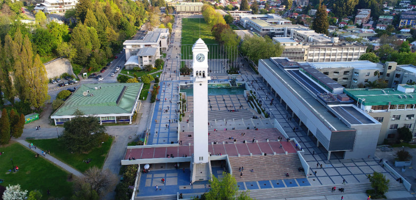
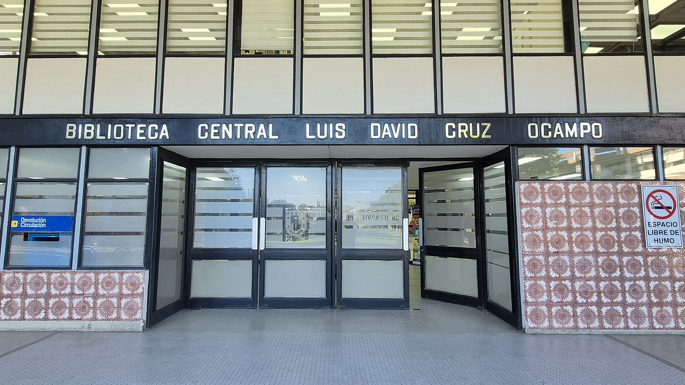
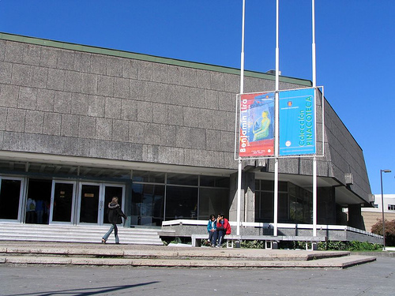
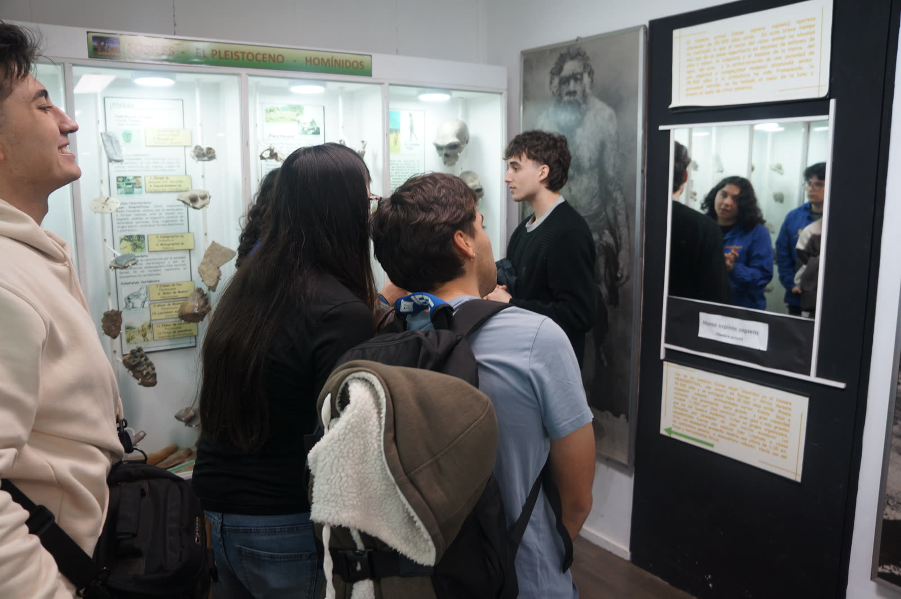

01SEDE PROPUESTA
Marina del Sol
Talcahuano
Base operativa para alojamiento, plenarias, alimentación y sesiones paralelas, sujeta a disponibilidad y confirmación contractual.
IEEE SECCIÓN CHILE SUR · UNIVERSIDAD DE CONCEPCIÓN
Student Branches
Regional Meeting
CONCEPCIÓN / REGIÓN DEL BIOBÍO
Una reunión regional para
aprender haciendo.
Formación técnica, comunidad IEEE, territorio y un plan concreto para que cada rama vuelva con impulso.
Explorar el encuentroUna escala regional, una experiencia que se queda.
SBRM es el lugar donde las ramas estudiantiles IEEE dejan de verse a la distancia y empiezan a trabajar en la misma mesa.
Durante cinco días, delegaciones de la región se encuentran en Concepción para intercambiar prácticas, entrenar habilidades técnicas, conocer el ecosistema del Biobío y abrir conversaciones que continúan cuando el evento termina.
Cada delegación se lleva una hoja de ruta de 90 días para activar su siguiente movimiento.
La reunión se mueve entre sede, campus y territorio. No como excursiones aisladas: como una sola conversación sobre tecnología, comunidad y futuro regional.
Base operativa para alojamiento, plenarias, alimentación y sesiones paralelas, sujeta a disponibilidad y confirmación contractual.
Campus, Campanil, talleres, recepción institucional y encuentro con la plataforma académica que sostiene a las ramas.
Talcahuano, Hualpén, Lota, San Pedro, Tomé y Dichato aparecen como contexto vivo para conectar ingeniería y territorio.
La agenda combina formación, encuentro, ciudad y transferencia. Los horarios, salas y sesiones específicas se publicarán con la apertura de inscripciones.
Recepción de delegaciones, acreditación, orientación logística y primer encuentro entre ramas. La llegada se organiza para que cada persona pueda comenzar el programa con calma.
La apertura instala el propósito de SBRM y pone en común la experiencia de las ramas: qué funciona, qué cuesta y qué queremos probar juntos.
Jornada académica con talleres técnicos, visitas autorizadas, capítulos estudiantiles y conversaciones con la Universidad de Concepción.
Mentorías, desafíos, vínculos con el ecosistema profesional y una experiencia local que muestre el Biobío más allá de la sala.
El encuentro cierra con acuerdos concretos, balance compartido y una hoja de ruta para que lo aprendido tenga continuidad en cada rama.
La SBRM reúne distintas formas de participar: una sala técnica, una conversación de pasillo, una mentoría, un desafío o una idea que encuentra a su equipo.
Sesiones prácticas pensadas para que el conocimiento pase de la pantalla a la agenda de la rama.
RAS · CSS · PES · EMBS · ComSoc · WIE y las ramas que sostienen la red.
Postgrados, empresas, mini feria laboral y conversaciones que abren próximos pasos.
Ideas que se exponen, se discuten y se ponen a prueba con una mirada técnica y responsable.
La experiencia también se diseña en los detalles: una llegada simple, información verificable, rutas accesibles y un equipo que acompaña cada transición.
La llegada se coordina desde el aeropuerto Carriel Sur y el terminal de buses, con ventanas de viaje, contactos de guardia y traslados grupales según demanda.
El modelo busca concentrar alojamiento, plenarias y alimentación en la sede operativa. La disponibilidad final y las tarifas se confirmarán con el proveedor.
El registro contempla accesibilidad, alimentación declarada, conectividad y documentación de viaje. Las exigencias de visa siempre se revisan en fuentes oficiales.
Importante: los nombres de salones, aforos, habitaciones, tarifas, permisos universitarios y servicios de traslado quedan sujetos a confirmación antes de abrir las inscripciones.
La propuesta combina una base operativa para hacer simple la estadía y una jornada académica que abre la puerta de la Universidad de Concepción.
Alojamiento, plenarias, feria, alimentación y sesiones paralelas. El nombre contractual del salón, los montajes, el inventario y las tarifas se confirmarán por escrito.
El escenario base busca que las delegaciones puedan dormir, comer y encontrarse en un mismo complejo, reduciendo desplazamientos y cuidando la operación de los tres días centrales.
Alternativa integrada para plenarias, apertura, cierre, feria y salones paralelos. El aforo y la propuesta comercial quedan sujetos a cotización formal.
La documentación de trabajo contempla SurActivo como salón principal y salones Pettra para tracks y reuniones, con capacidades por montaje que deben confirmarse.
Campus, Campanil, Foro, Arco, Casa del Arte, talleres y vinculación. Cada espacio queda sujeto a autorización y disponibilidad institucional.
La jornada UdeC conecta la reunión con la plataforma académica local: seis talleres simultáneos, recepción institucional y encuentros con capítulos y grupos de la universidad.
Concepción es campus, puerto, bosque, música e industria. El Biobío no funciona como telón de fondo: es parte de la conversación.
Desde el Campanil hasta Talcahuano, desde la Pinacoteca hasta Lota, la experiencia regional se abre a lugares que explican por qué esta sede tiene una identidad propia.



La SBRM se diseña para salir de la pantalla: un taller que se comparte, un puerto que trabaja, una costa que cambia la conversación y una mesa donde la red se vuelve cercana.

Selección fotográfica de la carpeta de trabajo compartida en Drive para talleres, comunidad y recorrido UdeC. Las imágenes territoriales se mantienen con sus créditos en el mapa.
El encuentro tiene una base, pero no una sola coordenada. Selecciona una parada para descubrir lugares que pueden formar parte de la experiencia SBRM: campus, paisaje, memoria y mar.
Las fotografías de esta sección combinan imágenes de la carpeta de trabajo compartida en Drive, imágenes de Wikimedia Commons y registros públicos de la Universidad de Concepción. Cada imagen externa mantiene su enlace de referencia.
La inscripción, el llamado a voluntariado, las postulaciones de relatores y la participación de empresas se habilitarán por etapas.
Fechas, categorías, alojamiento y programa se publicarán cuando el proceso esté listo.
Voluntariado, facilitación y apoyo operativo: distintas formas de hacer comunidad desde dentro.
Mentorías, stands, desafíos y conversaciones que vinculan el talento joven con la región.
SBRM 2027 · CONCEPCIÓN
28 de octubre — 1 de noviembre de 2027
Región del Biobío · Chile